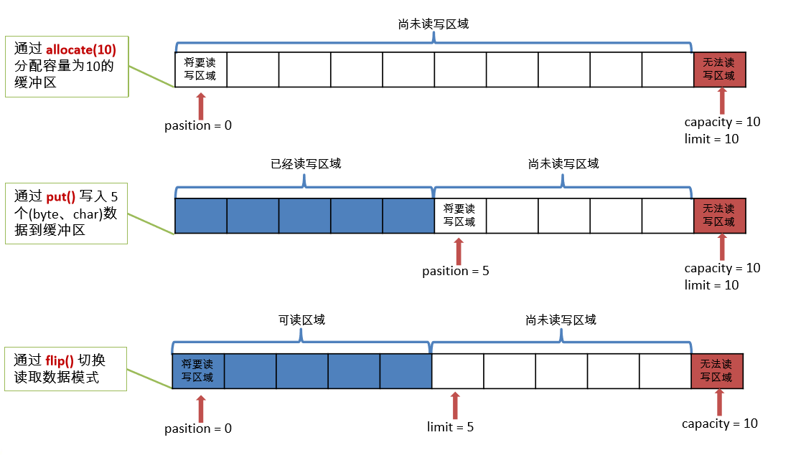
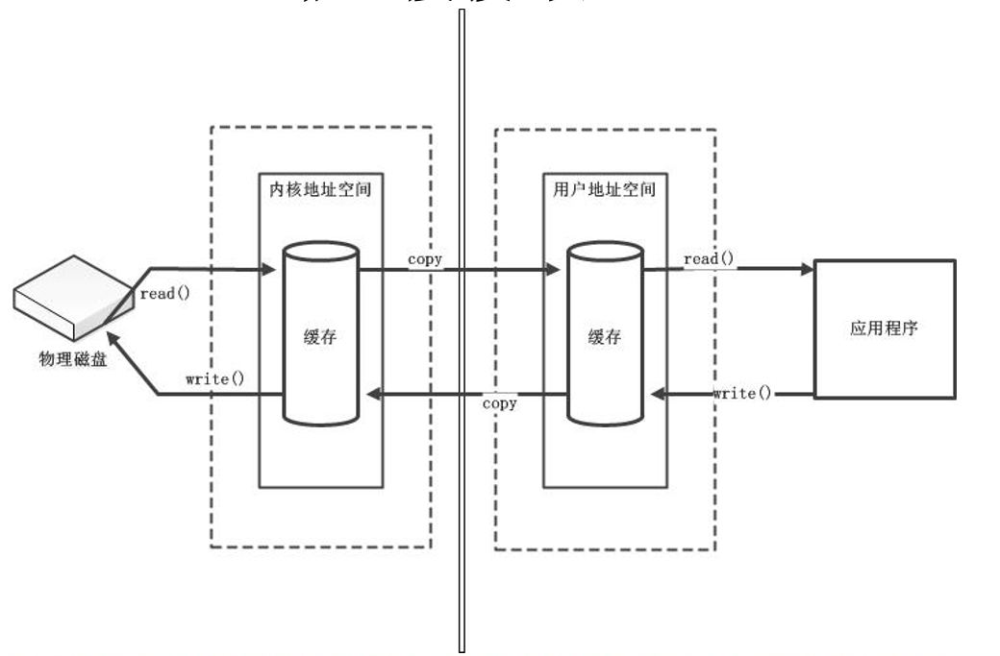
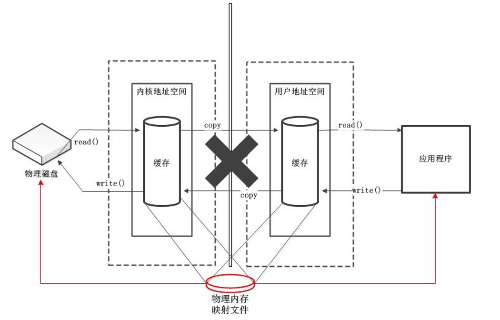
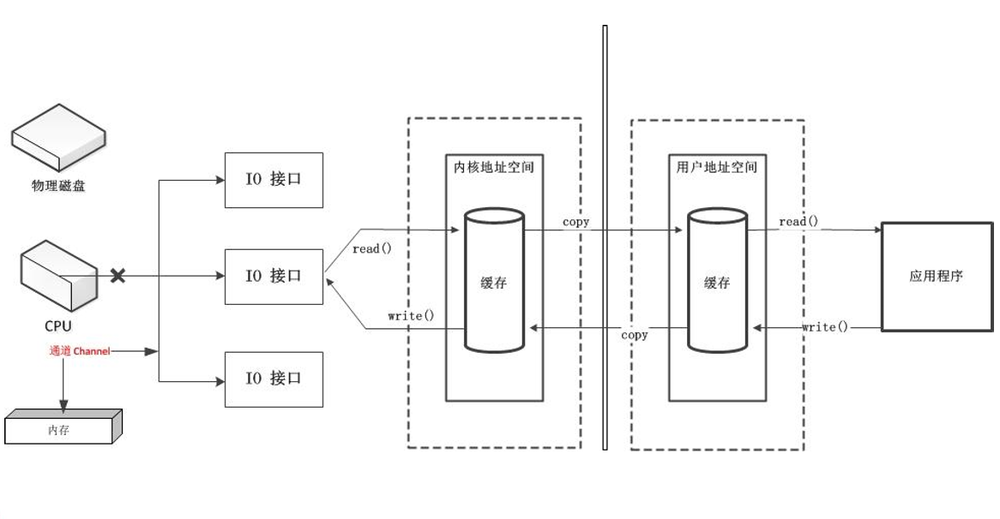

Java NIO 简介
Java NIO（New IO）是从Java1.4版本开始引入的一个新的IO API，可以替代标准的Java IO API，NIO 与原来的IO有同样的作用和目的，但是使用的方式完全不同，NIO支持面向缓冲区的、基于通道的IO操作。NIO将以更加高效的方式进行文件的读写操作。
Java NIO与IO的主要区别
| IO | NIO |
|---|---|
| 面向流（Stream） | 面向缓冲区（Buffer） |
| 阻塞IO（Blocking IO） | 非阻塞IO（Non Blocking IO） |
| 无 | 选择器（Selectors） |
通道（Channel）与缓冲区（Buffer）
通道和缓冲区
- Java NIO系统的核心在于：通道（Channel）和缓冲区（Buffer）。通道表示打开到IO设备（例如：文件、套接字）的连接。若需要使用NIO系统，需要获取用于连接IO设备的通道以及用于容纳数据的缓冲区。然后操作缓冲区，对数据进行处理，简而简直，Channel负责传输，Buffer负责存储。
缓冲区（Buffer）
- 缓冲区（Buffer）：一个用于特定基本数据类型的容器。由java.nio包定义的，所有缓冲区都是Buffer抽象类的子类。
- Java NIO中的Buffer主要用于与NIO通道进行交互，数据是从通道读入缓冲区，从缓冲区写入通道的。
- Buffer 就像是一个数组，可以保存多个相同数据类型的数据。根据数据类型不同（boolean除外），有以下Buffer常用子类：ByteBuffer、CharBuffer、ShortBuffer、IntBuffer、LongBuffer、FloatBuffer、DoubleBuffer，这些子类都采用相似的方法进行管理数据，只是各自管理的数据类型不同而已，都是通过如下方法获取一个Buffer对象： static XxxBuffer allocate(int capacity) : 创建一个容量为capacity的XxxBuffer对象
缓冲区的基本属性
Buffer中的重要概念：
- 容量（capacity）：表示Buffer最大数据容量，缓冲区容量不能为负，并且创建后不能更改。
- 限制（limit）：第一个不应该读取或写入的数据的索引，即位于limit后的数据不可读写。缓冲区的限制不能为负，并且不能大于其容量。
- 位置（position）：下一个要读取或写入的数据的索引。缓冲区的位置补鞥个为负，并且不能大于limit值。
- 标记（mark）与重置（reset）：标记是一个索引，通过Buffer中的mark() 方法指定Buffer中一个特定的position，之后可以通过调用reset() 方法恢复到这个position。
- 标记、位置。限制、容量遵循以下不变式： 0 <= mark <= position <= limit <= capacity
图解缓冲区属性

Buffer的常用方法
| 方法 | 描述 |
| Buffer clear() | 清空缓冲区并返回对缓冲区的引用 |
| Buffer flip() | 切换为读模式，将缓冲区的界限设置为当前位置，并将当前位置重置为 0 |
| int capacity() | 返回 Buffer 的 capacity 大小 |
| boolean hasRemaining() | 判断缓冲区中是否还有元素 |
| int limit() | 返回 Buffer 的界限(limit) 的位置 |
| Buffer limit(int n) | 将设置缓冲区界限为 n, 并返回一个具有新 limit 的缓冲区对象 |
| Buffer mark() | 对缓冲区设置标记 |
| int position() | 返回缓冲区的当前位置 position |
| Buffer position(int n) | 将设置缓冲区的当前位置为 n , 并返回修改后的 Buffer 对象 |
| int remaining() | 返回 position 和 limit 之间的元素个数 |
| Buffer reset() | 将位置 position 转到以前设置的 mark 所在的位置 |
| Buffer rewind() | 将位置设为为 0， 取消设置的 mark |
缓冲区的数据操作
Buffer所有子类提供了两个用于数据操作的方法：get()与put()方法
- 获取Buffer中的数据：
get()：读取单个字节
get(byte[] dst)：批量读取多个字节到dst字节数组中
get(int index)：读取指定索引位置的字节（不会移动position） - 放入数据到Buffer中
put(byte b)：将给定单个字节写入缓冲区的当前位置
put(byte[] src)：将 src 中的字节写入缓冲区的当前位置
put(int index, byte b)：将指定字节写入缓冲区的索引位置(不会移动 position)
直接缓冲区与非直接缓冲区
- 字节缓冲区要么是直接的，要么是非直接的。如果为直接字节缓冲区，则 Java 虚拟机会尽最大努力直接在 此缓冲区上执行本机 I/O 操作。也就是说，在每次调用基础操作系统的一个本机 I/O 操作之前（或之后）， 虚拟机都会尽量避免将缓冲区的内容复制到中间缓冲区中（或从中间缓冲区中复制内容）。
- 直接字节缓冲区可以通过调用此类的 allocateDirect() 工厂方法来创建。此方法返回的缓冲区进行分配和取消 分配所需成本通常高于非直接缓冲区。直接缓冲区的内容可以驻留在常规的垃圾回收堆之外，因此，它们对 应用程序的内存需求量造成的影响可能并不明显。所以，建议将直接缓冲区主要分配给那些易受基础系统的 本机 I/O 操作影响的大型、持久的缓冲区。一般情况下，最好仅在直接缓冲区能在程序性能方面带来明显好 处时分配它们。
- 直接字节缓冲区还可以通过FileChannel 的 map() 方法 将文件区域直接映射到内存中来创建。该方法返回 MappedByteBuffer 。Java 平台的实现有助于通过 JNI 从本机代码创建直接字节缓冲区。如果以上这些缓冲区 中的某个缓冲区实例指的是不可访问的内存区域，则试图访问该区域不会更改该缓冲区的内容，并且将会在 访问期间或稍后的某个时间导致抛出不确定的异常。
- 字节缓冲区是直接缓冲区还是非直接缓冲区可通过调用其 isDirect() 方法来确定。提供此方法是为了能够在 性能关键型代码中执行显式缓冲区管理。
非直接缓冲区图解

直接缓冲区图解

通道（Channel）
通道（Channel）：由 java.nio.channels 包定义 的。Channel 表示 IO 源与目标打开的连接。 Channel 类似于传统的“流”。只不过 Channel 本身不能直接访问数据，Channel 只能与 Buffer 进行交互。
图解：

主要实现类如下：
- FileChannel：用于读取、写入、映射和操作文件的通道。
- DatagramChannel：通过 UDP 读写网络中的数据通道。
- SocketChannel：通过 TCP 读写网络中的数据。
- ServerSocketChannel：可以监听新进来的 TCP 连接，对每一个新进来
的连接都会创建一个 SocketChannel。
NIO 的非阻塞式网络通信
阻塞与非阻塞
- 传统的 IO 流都是阻塞式的。也就是说，当一个线程调用 read() 或 write() 时，该线程被阻塞，直到有一些数据被读取或写入，该线程在此期间不 能执行其他任务。因此，在完成网络通信进行 IO 操作时，由于线程会 阻塞，所以服务器端必须为每个客户端都提供一个独立的线程进行处理， 当服务器端需要处理大量客户端时，性能急剧下降。
- Java NIO 是非阻塞模式的。当线程从某通道进行读写数据时，若没有数 据可用时，该线程可以进行其他任务。线程通常将非阻塞 IO 的空闲时 间用于在其他通道上执行 IO 操作，所以单独的线程可以管理多个输入 和输出通道。因此，NIO 可以让服务器端使用一个或有限几个线程来同 时处理连接到服务器端的所有客户端。
选择器（Selector）
选择器（Selector） 是 SelectableChannle 对象的多路复用器，Selector 可 以同时监控多个 SelectableChannel 的 IO 状况，也就是说，利用 Selector 可使一个单独的线程管理多个 Channel。Selector 是非阻塞 IO 的核心。
选择器的应用
- 当调用 register(Selector sel, int ops) 将通道注册选择器时，选择器 对通道的监听事件，需要通过第二个参数 ops 指定。
- 可以监听的事件类型（可使用 SelectionKey 的四个常量表示）：
读 : SelectionKey.OP_READ （1）
写 : SelectionKey.OP_WRITE （4）
连接 : SelectionKey.OP_CONNECT （8）
接收 : SelectionKey.OP_ACCEPT （16） - 若注册时不止监听一个事件，则可以使用“位或”操作符连接。
SelectionKey
SelectionKey：表示 SelectableChannel 和 Selector 之间的注册关系。每次向 选择器注册通道时就会选择一个事件(选择键)。选择键包含两个表示为整 数值的操作集。操作集的每一位都表示该键的通道所支持的一类可选择操
作。